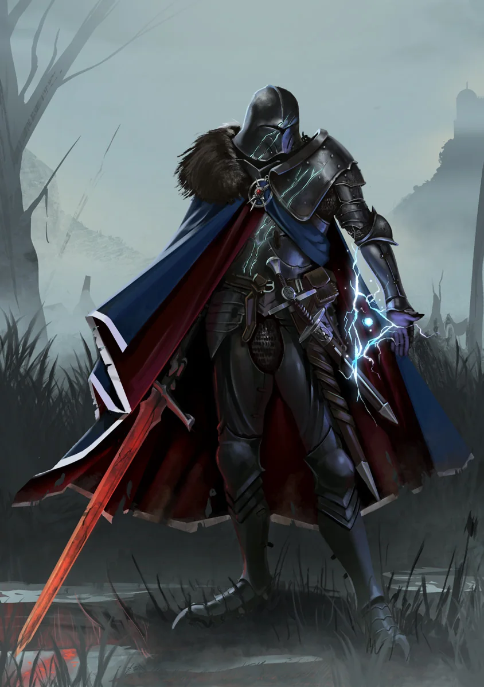
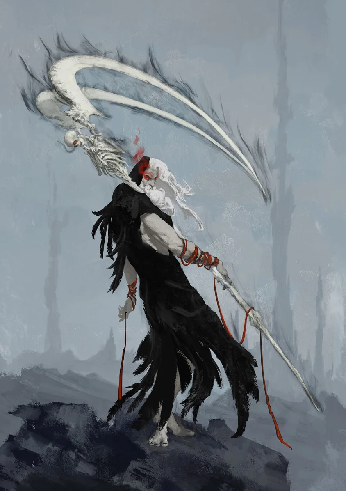
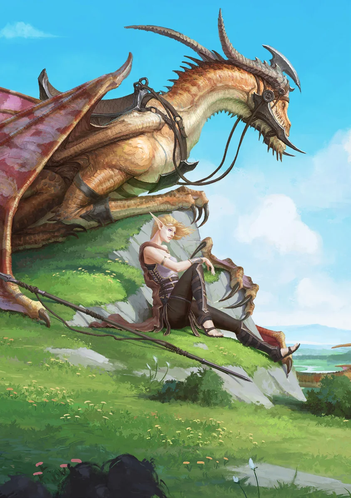

Estas subclasses substituem a Subclasse atual quando um acontecimento decisivo muda o rumo do personagem. Elas não são mais poderosas; apenas representam uma transformação narrativa e mecânica.



Às vezes, a história da campanha sofre uma guinada dramática: todos os integrantes do Grupo, exceto um, morrem; seu Patrono o trai; você salva uma fera que passa a se recusar a deixar seu lado...
Esses momentos podem exigir uma mudança igualmente dramática na classe em jogo. É para isso que existem as Subclasses Narrativas. Em geral, elas não são apropriadas como escolhas iniciais. A critério do Mestre, podem ser adotadas em qualquer momento da campanha quando a história exigir, substituindo a Subclasse existente.
Essas Subclasses podem envolver um pouco mais de complexidade mecânica e são mais indicadas para jogadores experientes. Elas NÃO são mais poderosas que as demais, apenas diferentes.
Quebrador de Juramento
Quebrador de Juramento — Juramentado
Caído, em Busca de Redenção
Bênção Sombria. Você caiu da luz, mas não por completo. Perde acesso às Magias Radiantes Golpe Certeiro, Curar e Vínculo Protetor; recebe acesso às Magias Necróticas Atrair, Armadilha Sombria e Semblante Pavoroso. Sempre que puder escolher uma Magia Utilitária, pode escolher uma Radiante ou Necrótica.
Exemplo de Poder. Substitui Exemplo de Virtude. Receba Vantagem em Testes de Potência ao tentar intimidar outras pessoas.
Aura de Sofrimento. Você recebe uma aura de Alcance 4 e pode Interpor-se por um aliado em qualquer ponto da aura. Entretanto, Julgamento Radiante deixa de ser ativado quando você é atacado; ele é ativado sempre que você poderia Interpor-se, mas não o faz.
LVL 3
Todos Nós Sofremos. Receba +2 no máximo de Ferimentos. Quando um aliado dentro da aura receber Ferimentos ou falhar em um SAVE, você pode sofrer o efeito no lugar dele e ativar Julgamento Radiante.
Dê-me Sua Dor. Reação, quando um aliado voluntário dentro da aura teria os PV reduzidos a 0: troque seus PV com os dele. Caso seus PV atuais sejam superiores aos PV máximos do aliado, ele recebe a diferença como PV temp. Seus PV são reduzidos a 0 e você recebe o Ferimento no lugar dele.
LVL 7
Tormento. Cura pelas Mãos cura você em dobro e outras criaturas pela metade. Ao causar dano, você pode gastar pontos da reserva de Cura pelas Mãos para aumentar o dano em uma quantidade igual aos pontos gastos, ignorando Armadura.
LVL 11
Explorar. Reação, sempre que um aliado dentro da aura Defender: gaste seus Dados de Julgamento para obrigar um inimigo dentro da aura a Interpor-se. Uma criatura não pode Interpor-se contra o próprio ataque.
LVL 15
Terror Sangrento. Ataques contra você recebem 1 aplicação de Desvantagem para cada Ferimento que possuir, até o máximo de 3.
Lâmina Arcana
Lâmina Arcana — Guerreiro
Quando o Aço Encontra a Magia
Comando Arcano. Seu foco no arcano faz você perder acesso a Maestria com Armas e Táticas de Combate. Em contrapartida, ao rolar Iniciativa, receba INT Mana, perdida ao final do combate se não for gasta. Sempre que poderia escolher uma Tática de Combate ou Maestria com Armas, escolha outra Ordem do Guerreiro ou uma Magia de Grau 1 ou inferior de qualquer Escola de Magia. Suas Ordens do Guerreiro também são fortalecidas por magia:
- Enfrente-me! — Decreto Cintilante. Reação, depois que um aliado em Alcance 12 sofrer um Crit: o inimigo sofre STR d8 de Dano Radiante, ignorando Armadura, é puxado até 4 Espaços em sua direção e fica Provocado por você até seus PV serem reduzidos a 0.
- Mexam-se! Mexam-se! — Levado pelo Vento. Ao rolar Iniciativa, conceda a você e a um aliado Vantagem na rolagem, +3 de Deslocamento e capacidade de voar por 1 rodada. Em seguida, ambos podem se mover gratuitamente.
- Segurem a Linha! — Armadura Cristalina. (1/encontro) Reação, quando os PV de um aliado forem reduzidos a 0: ordene que continue lutando e defina os PV dele como 3 × LVL. Além disso, ele recebe a mesma quantidade de PV temp. Inimigos que reduzirem esses PV temp em combate corpo a corpo têm o Deslocamento reduzido pela metade até o final do próximo Turno.
- Reposicionar! — Passo Instantâneo. Ação/Reação, no Turno de um aliado: ordene que 1 aliado se mova gratuitamente até o próprio Deslocamento, ou que 2 aliados se movam até metade. Você pode trocar de lugar com um deles.
- Posso Fazer Isso o Dia Todo! — Fênix Ascendente. (1/encontro) Reação, quando seus PV seriam reduzidos a 0: gaste qualquer quantidade de Dados de Vida, defina seus PV como a soma rolada e cause essa mesma quantidade de dano de Fogo a cada inimigo em Alcance 2. Eles ficam Em Brasas.
- Golpe Coordenado! — Golpe Definhante. Ataques realizados desta forma causam Dano Necrótico adicional igual ao valor máximo do seu Dado de Combate. Um inimigo que sofrer esse dano é considerado Morto-vivo por 1 rodada.
LVL 3
Incendiário. Ao rolar Iniciativa, você pode conjurar Encantar Arma gratuitamente; pode Elevar Grau normalmente gastando Mana adicional.
Conhecimento Profundo (1). Escolha qualquer Magia de Grau 1 ou inferior e qualquer Magia Utilitária.
LVL 7
Conhecimento Profundo (2). Escolha qualquer Magia de Grau 2 ou inferior e qualquer Magia Utilitária.
LVL 11
Conhecimento Profundo (3). Escolha qualquer Magia de Grau 3 ou inferior e qualquer Magia Utilitária.
LVL 15
Conhecimento Profundo (4). Escolha qualquer Magia de Grau 4 ou inferior e qualquer Magia Utilitária.
Ceifador
Ceifador — Bruxo
Abandonado, Renascido
Alma Vazia. Separado de seu Patrono, você não pode mais conjurar Rajada Sombria nem conjurar Magias de Grau por meio de Poder Roubado. Entretanto, como lembrança da separação, você roubou um segredo de seu Patrono: a Foice de Ossos, uma arma mágica de tendões e ossos imbuída de magia sombria.
Foice de Ossos. Ação: invoque uma Foice de Ossos mágica, uma arma corpo a corpo. Ela causa 2d12 de dano Cortante + DEX de Dano Necrótico em cada dado, Alcance 2. A arma se despedaça depois de acertar ou quando o combate termina. Invocações que afetariam Rajada Sombria afetam Foice de Ossos em vez disso.
LVL 3
Sacrifício Sombrio. Sacrifique 1 Minion de Sombra para conjurar uma Magia no maior Grau que desbloqueou. Cada Magia posterior conjurada neste encontro exige 1 Minion adicional.
Prole Mártir. Sempre que Defender, você pode sacrificar 1 Minion de Sombra para não sofrer dano.
LVL 7
Ceifa Sinistra. Ao golpear com Foice de Ossos, divida os dados como desejar entre qualquer quantidade de Alvos adjacentes dentro do Alcance.
Ceifar. Quando Foice de Ossos gerar um Crit ou matar uma criatura, invoque 1 Minion de Sombra gratuitamente.
LVL 11
Meu Sangue, Meu Poder. Receba 1 Ferimento para conjurar uma Magia de Grau que conheça no maior Grau que desbloqueou.
Poder Sobrenatural. Receba Vantagem em Testes de Concentração se possuir pelo menos 1 Minion de Sombra.
LVL 15
Agora EU Sou o Patrono!. Ao rolar Iniciativa, invoque gratuitamente 2 Minions de Sombra.
Mestre das Feras
Mestre das Feras — Caçador
Juntos, Imparáveis
Mestre das Feras. Escolha um animal Pequeno, Médio ou Grande como Companheiro Animal. Em vez das 2 primeiras habilidades de Ímpeto da Caçada, você pode escolher Na Garganta! e Proteja-me! para usar com o companheiro.
Companheiro Pequeno
Exemplos: gato, morcego, falcão, guaxinim, galo, furão e semelhantes.
- Olhos Aguçados. (1/encontro) Marque um Alvo gratuitamente. Nível 7: 2/encontro. Nível 11: 3/encontro.
- Proteja-me! (1/encontro) Sempre que Defender, o companheiro distrai o atacante, fazendo o ataque errar, e você se move gratuitamente até metade do Deslocamento. Nível 7: 2/encontro.
- Na Garganta! (1/encontro) Custa 1 carga de IC: o companheiro ataca gratuitamente sua Presa, causando 1d4 + LVL de dano, ignorando Armadura. Nível 11: 2/encontro, 1/rodada. Nível 15: 3/encontro, 1/rodada.
Companheiro Médio
Exemplos: lobo, javali, pantera, abutre, aranha gigante e semelhantes. Requisito: Nível 3.
- Feroz. Sempre que você ou o companheiro gerar um Crit contra sua Presa, ele ataca novamente causando LVL de dano, ignorando Armadura, e você pode se mover gratuitamente até 2 Espaços. Nível 7: 4 Espaços. Nível 15: 6 Espaços.
- Proteja-me! Quando Defender, seu companheiro pode primeiro atacar essa criatura, causando 1d4 + LVL de dano.
- Na Garganta! (1/encontro) Custa 1 carga de IC e 1 Ação: o companheiro ataca sua Presa, causando 1d8 + (3 × LVL) de dano, ignorando Armadura. Nível 11: 2/encontro.
Companheiro Grande
Exemplos: leão, Urso-Coruja, alce, escorpião gigante, Draco e semelhantes. Requisito: Nível 3.
- Protetor Alfa. O dano do primeiro ataque contra você a cada Rodada é reduzido pela metade.
- Proteja-me! (1/encontro) Depois que você receber 1 Ferimento, o companheiro pode levá-lo até 12 Espaços para um local seguro. Nível 7: você é levado antes de receber o Ferimento. Nível 15: 2/encontro.
- Na Garganta! (1/encontro) Custa 2 cargas de IC e 2 Ações: o companheiro ataca sua Presa, causando 1d12 + (4 × LVL) de dano, ignorando Armadura. Se a criatura morrer, você pode causar metade desse dano a outra criatura em Alcance 4. Nível 11: 2/encontro.